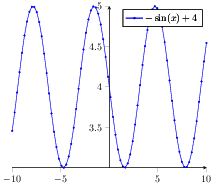

Tikzplot example¶
This example shows PGFPlot drawing capabilities.
The code¶
from pylatex import NoEscape
from pythontikz import Document
from pythontikz.common import Plot, TikzPicture, Axis, TikzOptions
# create document
doc = Document(documentclass='standalone')
with doc.create(TikzPicture()) as pic:
with pic.create(Axis(options={
'axis x line': 'center',
'axis y line': 'middle',
'tick align': 'outside',
})) as pic:
p = Plot(name=NoEscape(r"$-\sin(x) + 4$"), func=r"-sin(\x r)+4",
# coordinates=[(1,1), (2,2), (3,-3)],
error_bar_deltas=None,
options=TikzOptions({
'domain': NoEscape('-10:10'),
'samples': 80,
'mark size': '0.6pt'
}),
use_auto_format=True
)
pic.append(p)
if __name__ == '__main__':
print(doc.dumps())
doc.generate_pdf('tikzplot', clean_tex=False, compiler='pdflatex')
The generated files¶
tikzplot.tex¶
1 2 3 4 5 6 7 8 9 10 11 12 13 14 15 16 17 18 19 20 21 22 23 | \documentclass{article}%
\usepackage[T1]{fontenc}%
\usepackage[utf8]{inputenc}%
\usepackage{lmodern}%
\usepackage{textcomp}%
\usepackage{lastpage}%
\usepackage{tikz}%
\usepackage{pgfplots}%
\pgfplotsset{compat=newest}%
%
%
%
\begin{document}%
\normalsize%
\pagestyle{empty}%
\begin{tikzpicture}%
\begin{axis}[axis x line=center,axis y line=middle,tick align=outside]%
\addplot+[domain=-10:10,samples=80,mark size=0.6pt]{-sin(\x r)+4};%
%
\addlegendentry{$-\sin(x) + 4$}%
\end{axis}%
\end{tikzpicture}%
\end{document}
|
tikzplot.pdf
